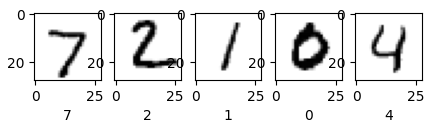

개요
참여중인 딥러닝 스터디 4주차 기록입니다.
3주차 과제 설명(MNIST 설명)
Binary(Hypothesis : Sigmoid, CrossEntropy : Y, 1-Y)
→ Multiclass(Hypothesis : Softmax, CrossEntropy : \(Y_1\), \(Y_2\)…)MNIST
- 데이터사이언스, 딥러닝에서의 기초(코딩의 Hello world와 같음)
- 사람들의 손글씨 데이터를 모아둔 유명한 데이터 셋
# tensorflow MNIST로딩 샘플코드 from tensorflow.keras.datasets import mnist (x_train, y_train), (x_test, y_test) = mnist.load_data() print(x_train.shape, y_train.shape, y_train[0]) >>>(60000, 28, 28) (60000,) 5 # 6만건의 28*28형태의 데이터 (x_train.shape), 6만건의 0차원 형태 데이터(y_train.shape), 0번째 y_train 정답값(5)
3주차 과제 설명(MNIST의 Softmax구현)
- MNIST의 Softmax구현
reshape을 사용하는 이유
- 모델에 통과시키기 위해 행렬을 flatten(28*28 → 784*1)한 후, 다시 Visualize할 때 사용
img = x_train[i].reshape(28,28) plt.imshow(img, cmap=plt.cm.binary)Hyper parameter
- Parameter : W와 b와 같은 학습을 통해 최적화하는 값
- Hyper parameter : 모델의 선택(Linear vs Logistic regression), learning_rate, epoch, class(몇개로 나눌지), feature(input data) 등
# MNIST dataset parameters num_classes = 10 num_features = 28 * 28 # 784 # Training parameters learning_rate = 0.01 steps = 1000 batch_size = 256np.array : list형태의 train data를 수학적 연산에 유리한 numpy로 변환하기 위해 사용
- 권장하는 코딩습관 : 아래와 같이 데이터타입을 명시 (안적어도 float32로 기본지정되긴 함)
- np.array(x_train) → np.array(x_train, np.float32)
x_train, x_test = np.array(x_train, np.float32), np.array(x_test, np.float32)
- 권장하는 코딩습관 : 아래와 같이 데이터타입을 명시 (안적어도 float32로 기본지정되긴 함)
구조변경(flatten)
- reshape([-1, num_features]) : flatten 구현
- 784 data에 reshape([-1, 28]) : reshape의 -1 부분은 28이 됨
- 784 data에 reshape([-1, 784]) : reshape의 -1 부분은 1이 됨
# data 구조를 통일 x_train = x_train.reshape([-1, num_features]) x_test = x_test.reshape([-1, num_features]) print(x_train.shape, x_test.shape) >>> (60000, 784) (10000, 784)
- reshape([-1, num_features]) : flatten 구현
데이터 전처리(Normalize, Zero-centering)
x_train, x_test = x_train / 255. , x_test / 255. # Normalizd x_train, x_test = (x_train-np.mean(x_train)), (x_test-np.mean(x_test)) # Zero-CenteringVariable 설정
- W와 b의 Shape은 결정해주어야 함 (W의 차원파악 중요)
- W : input dimesion, output dimesion
- b : number of classes(output dimesion)
W = tf.Variable(tf.ones([num_features, num_classes]), name = 'weight') b = tf.Variable(tf.zeros([num_classes]), name='bias')
- W와 b의 Shape은 결정해주어야 함 (W의 차원파악 중요)
Hypothesis와 평가방법(accuracy) 등 설정
def softmax(x): z = tf.matmul(x, W) + b sm = tf.nn.softmax(z) return sm def cross_entropy(y_pred, y_true): y_true = tf.one_hot(y_true, depth=num_classes) y_pred = tf.clip_by_value(y_pred, 1e-9, 1.) return tf.reduce_mean(-tf.reduce_sum(y_true * tf.math.log(y_pred), axis = 1)) def accuracy(y_pred, y_true): correct_prediction = tf.equal(tf.argmax(y_pred, axis=1), tf.cast(y_true, tf.int64)) return tf.reduce_mean(tf.cast(correct_prediction, tf.float32))Optimizer
optimizer = tf.optimizers.SGD(learning_rate) def run_optimization(x,y): with tf.GradientTape() as tape: pred = softmax(x) loss = cross_entropy(pred, y) gradients = tape.gradient(loss, [W,b]) optimizer.apply_gradients(zip(gradients, [W,b]))Batch size구현
아래 코드는 기초적 구현이며, 중복제거나 차례대로 진행되는 기능 등도 있음
- 왜? 데이터가 시점 등에 따라 패턴이 있을 수 있다
- 100개의 데이터를 10등분했을 때, 각 데이터마다 패턴이 있을 수 있음
- 편향되지 않게 섞는 것이 batch_size의 기본적 컨셉 ```python n_train = x_train.shape[0] # 60000 n_test = x_test.shape[0] # 10000
def train_batch_maker(batch_size): random_idx = np.random.randint(n_train, size = batch_size) # (batch_size,) vector return x_train[random_idx], y_train[random_idx] # (batch_size, 28*28)
def test_batch_maker(batch_size): random_idx = np.random.randint(n_test, size = batch_size) # (batch_size,) vector return x_test[random_idx], y_test[random_idx] # (batch_size, 28*28) ```
- 왜? 데이터가 시점 등에 따라 패턴이 있을 수 있다
학습 및 Test
for step in range(steps): batch_x, batch_y = train_batch_maker(batch_size) # Run the optimization to update W and b values run_optimization(batch_x, batch_y) if step % 100 == 0: pred = softmax(batch_x) loss = cross_entropy(pred, batch_y) acc = accuracy(pred, batch_y) print(f"step: {step} loss: {loss} accuracy: {acc}") pred = softmax(x_test) print(f"Test Accuracy: {accuracy(pred, y_test)}") >>> Test Accuracy: 0.8712000250816345 #Predict 5 images from validaton set. num_images = 5 test_images = x_test[:num_images] predictions = softmax(test_images) # Visualize image and model predcition plt.figure(figsize = (5,5)) for i in range(num_images): plt.subplot(1, num_images, i+1) plt.imshow(np.reshape(test_images[i], [28,28]), cmap=plt.cm.binary) plt.xlabel(np.argmax(predictions.numpy()[i])) plt.show()
image.png
3주차 과제 설명(MNIST의 Neural Network구현)
- MNIST의 Neural Network구현(기초)
- Sequential : Python의 list 선언과 유사함
- 아래 코드의 경우, 사실상 Hidden layer가 없는 단층 Perceptron
- GPT의 경우 하단 모델표에서 Total params가 엄청 많음
from tensorflow.keras.models import Sequential from tensorflow.keras.layers import Dense model = Sequential() model.add(Dense(2, activation = "sigmoid", input_dim=2)) # neuron=2, input_dim=2 model.add(Dense(1, activation = "sigmoid")) # output_dim = 1 model.summary() >>>Model: "sequential" _________________________________________________________________ Layer (type) Output Shape Param # ================================================================= dense (Dense) (None, 2) 6 dense_1 (Dense) (None, 1) 3 ================================================================= Total params: 9 (36.00 Byte) Trainable params: 9 (36.00 Byte) Non-trainable params: 0 (0.00 Byte) _________________________________________________________________- 라이브러리를 활용하여 아래와 같이 코드가 간단해짐 (verbose을 0이 아닌값 지정시 진행상태 확인가능)
model.compile(optimizer = "SGD", loss = 'binary_crossentropy', metrics=['accuracy']) history = model.fit(x_data, y_data, epochs=1000, batch_size=32, verbose=0)- 모델평가
- 아래와 같이 acc가 낮은 이유는, XOR문제처럼 현재와 같은 단층레이어로는 해결이 어렵기 때문
loss, train_acc = model.evaluate(x_data, y_data, verbose=0) print(f"train_acc = {train_acc}") print(f"loss = {loss}") predict = model.predict(x_data) print(predict) >>>train_acc = 0.5 loss = 0.6908708810806274
- Sequential : Python의 list 선언과 유사함
- MNIST의 Neural Network구현(ANN, 인공신경망 Artificial Neural Network)
- Dense(10, activation = “sigmoid”) : 뉴런이 10개이며 활성화함수가 Sigmoid
- Dense(1, activation = “softmax”) : 활성화 함수로 Softmax 사용
- 중요 포인트
- input data의 shape와 일치시키기
- output activation은 내가 풀고자 하는 문제에 맞춰 잘 지정해야함
- Multi-class인데 Sigmoid를 사용한다면 돌아가지 않을 것임 ```python from tensorflow.keras.layers import Flatten
- 하단 모델표의 dense_2 (Dense)의 Param #의 의미
- 784*10 + 10(bias) : fully-connected layer
Model: "sequential_1" _________________________________________________________________ Layer (type) Output Shape Param # ================================================================= flatten (Flatten) (None, 784) 0 dense_2 (Dense) (None, 10) 7850 dense_3 (Dense) (None, 10) 110 dense_4 (Dense) (None, 1) 11 ================================================================= Total params: 7971 (31.14 KB) Trainable params: 7971 (31.14 KB) Non-trainable params: 0 (0.00 Byte)
- Neural Network를 잘 사용하려면
- 하이퍼 파라미터 튜닝 : Activation fuction 어떤 것, 뉴런/레이어 갯수 등 설정
- 일반적으로 괜찮다고 알려진 값으로 지정해야 모델성능이 쓸만해짐
- 하이퍼 파라미터 튜닝 : Activation fuction 어떤 것, 뉴런/레이어 갯수 등 설정
4주차 정리
Deep Neural Network (Convolution NN)
- 딥러닝은 비선형적 관계를 잘 묘사함
- 과거에는 숫자데이터(금리, 고용률 등)만 다룰 수 있었음
- 이미지 등 비정형데이터를 잘 다룰 수 있게됨
- CNN(Convolutional Neural Network)
이미지를 분류, 처리하는 기술
- 분류(Classification) : 대상이 어디에 속하는지 분류
- 식별(Detection) : 사진에서의 어떤 객체를 분류하고, 그 객체가 어디에 속하는지 분류
- 이러한 분류와 식별을 응용하여 자율주행 자동차, 얼굴인식App 등 구현 가능 (CNN Architecture영향을 받아 발전)
CNN의 구성
- 특성추출(feature learning)
- 사진은 많은 정보를 포함해 계산량이 너무 많아지므로, 특성추출을 통해 압축이 필요함
- CNN은 모델이 이런 정보에서 어느 부분이 중요한지 찾게 만듦
- 특성추출로 압축된 정보를 Neural Network에 넣어, 원본사진 넣은 것과 동일한 것처럼, 빠르고 가볍게 돌아감
(예를 들어 자율주행에 활용하기 위해서는 짧은 시간에 처리해야함) - Convolution alyer(정보압축) / Pooling layer(정보버림) 등의 반복
- Classification
- Flatten / Fully-connected / Softmax 등 3주차까지 배운 내용
- 특성추출(feature learning)
Convolution layer
- Source(X)에 Kernel(W)행렬을 곱해 Result(Y)를 만드는것과 같음
- 원본이미지(Source)의 손실을 최소화하며 잘 압축하는 좋은Kernel값을 찾고자 함
- 아다마르곱 활용 : 매칭되는 칸의 숫자끼리 곱하여 더함
- Convolution layer를 통과해 (28,28)이 (14,14)가 되어도 특징 식별 가능
- CNN은, 마스크 쓴 사람의 일부 얼굴 특징만으로 사람을 판단하는 것과 같은 방법을 차용
- CNN이 잘 작동하기 위한 가정
- Spatial Locality : 사진의 일부만 봐도 식별이 가능하다
- Positional invariance : 이미지에서 사과 등 객체가 어디에 있던 사과임
- 예외 상황 : 엑스레이의 흰색이 위치에 따라 심장, 간 등 다름
- Source(X)에 Kernel(W)행렬을 곱해 Result(Y)를 만드는것과 같음
Convolution layer 추가설명
- image(32,32,3)를 filter(3,3,3)가 움직이며 아다마르곱으로 처리
- kernel과 filter는 동일한 의미로 사용
- (32X32X3)image에 (5X5X3)filter 적용시 output은 (28X28X1)
- output은 activation map임(매핑을 했다는 것)
- (32X32X3)image에 (5X5X3)filter 4개를 적용하는 이유?
- 필터가 필요했던 이유는 정보 압축 → 정보가 작아지며 손실 발생 (코끼리의 일부만을 보는 것과 같음)
- 각 부분의 정보(4개의 filter)를 모두 모아서 정확히 알 수 있음 (4개의 filter라는 서로 다른 각도에서 본 코끼리를 합쳐서 보게되는 것)
- image(32,32,3)를 filter(3,3,3)가 움직이며 아다마르곱으로 처리
Nested Conv-layers(Convolution layer에 대한 문제)
- Layer를 여러번 통과하여 너무 작아지는 문제(get smaller quickly) + 4k와 같은 큰 데이터의 계산량 문제
- 이러한 문제를 방지하기 위해 stride와 padding이라는 parameter를 추가
Stride
- (Input - Filter) / stride + 1
- (7x7)image에 (3X3)filter, stride 1 → (7-3)/1 + 1 = (5X5)
- (7x7)image에 (3X3)filter, stride 2 → (7-3)/2 + 1 = (3X3)
- (7x7)image에 (3X3)filter, stride 3 → (7-3)/3 + 1 = (2.33X2.33)
- output 소수인 것은 불가, padding(가장 자리에 0을 붙여줌)을 사용
- (Input - Filter + 2 \(*\) Padding) / stride + 1
- Padding을 2배하는 이유는 양쪽 테두리에 각 1개씩 추가되기 때문
- (Input - Filter) / stride + 1
예시
- Input (32x32x3) / 10 Filter(5X5) / stride 1, pad 2
- Output size(=32X32X10) : (32-5+2*2)/1 + 1 → (32X32) → 10개의 필터
- Number of Parameter(=760) : (Filter (5X5) * Input의 차원 3 + Bias 1) → (553+1) → 필터 10개 → (553+1) * 10
- Number of Parameter if fully-connected(=31,467,520) : (323210)(3232*3_1)
- Fully-connected로 31,467,520개 파라미터가 필요했다면, CNN으로 760개 파라미터로 가능해짐
- Input (32x32x3) / 10 Filter(5X5) / stride 1, pad 2
관례적으로 filter size는 정사각형이지만 직사각형도 가능하다
Pooling Layer : 쓸모없는 정보를 버림
- Pooling Layer의 종류
- Max pooling : 제일 큰 수만 가져옴
- Average pooling : 평균 가져옴
- Parameters 0개 (숫자를 찾는게 아닌 버림. 학습이 일어나지 않음)
- Pooling Layer의 특징
- 파라미터수가 0 (학습이 일어나지 않는다, Kernel[Filter]처럼 좋은 숫자를 찾는 작업이 없기 때문)
- Pooling Layer의 종류
Final project 설명
28만건의 신용카드 데이터로 만들기
금융데이터는 privacy이슈가 있어 공개시 익명화되어있음
- 단위가 다르면 연봉, 자산 여부를 역추적할 수 있어, PCA를 통해 익명화 가능
- PCA : 데이터 익명화기법은 아니고 처리기법
- V1, V2와 같은 세상에 존재하지 않는 축으로 변환하기때문에 익명화에 좋다
- 원래는 상관관계를 0이 되게만드는 테크닉
- 단위가 다르면 연봉, 자산 여부를 역추적할 수 있어, PCA를 통해 익명화 가능
Missing value 처리
- 평균,최빈,중앙 값 중 프로젝트에 가장 적합한 값 사용하여 대치
상관관계 파악 (Heatmap 분석)
- 과제의 금융데이터는 PCA로 인해 상관관계가 이미 사라져있음
데이터의 구조 파악
- class : 0정상 1이상거래 (0.17%만이 이상거래 → 모델평가시 고려)
불필요한 컬럼 삭제
Target이 합쳐져있는 원본데이터이므로 X, Y로 나누는 작업 필요
모델 평가
- 99프로가 정상거래인데 99프로 정상임을 맞췄다면, 단순히 모델이 좋다고 보기 어려움
- Precision, Recall, F1-Score → 이상거래를 몇건 맞췄는지 볼 수 있음
- 99프로가 정상거래인데 99프로 정상임을 맞췄다면, 단순히 모델이 좋다고 보기 어려움
평가지표는 f1-score를 사용 예정
- 바꾸고싶다면 사유 명시(어떤 부분을 중요하게 생각하여 Recall을 기준으로 삼았다)
Copyright © 2024 Kibok Park All rights reserved.